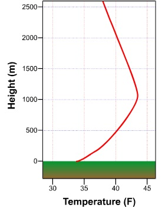
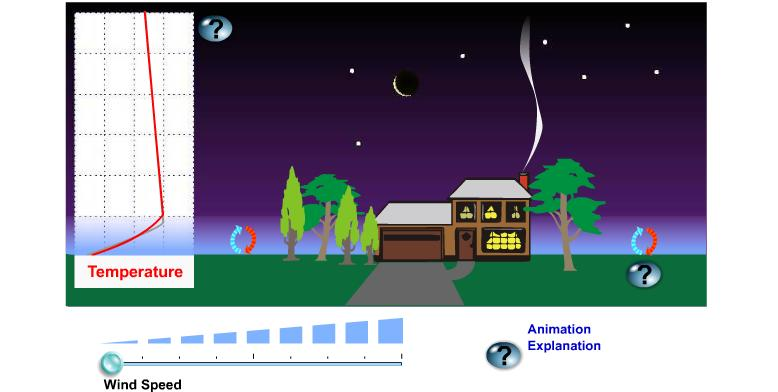
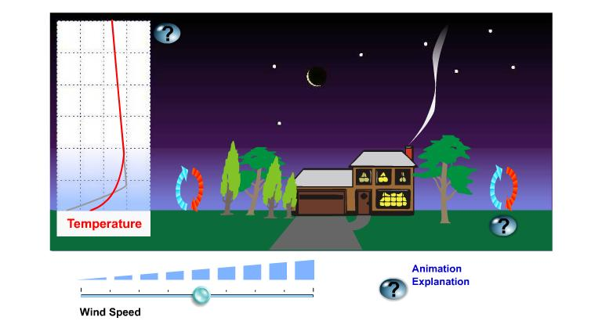
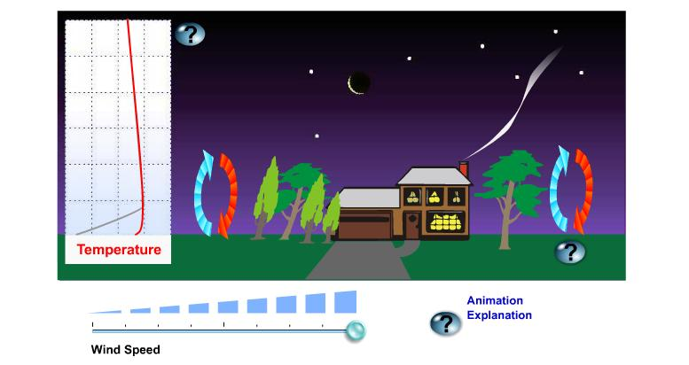
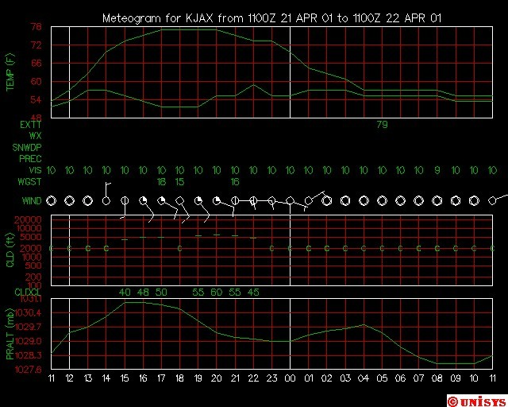
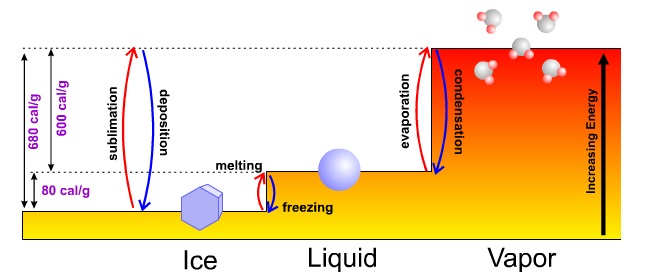

Atmospheric Controllers Of Local Nighttime Temperature
The ground routinely starts to cool after the sun sets because it emits more radiation than it gains from the atmosphere. In other words, the temperature of the ground starts to lower because it runs a radiation deficit (more losses than gains). In turn, a thin layer of air next to the ground starts to cool by conduction as a transfer of heat energy takes place from the initially warmer air to the cooler ground. This downward transfer of heat energy serves only to slightly slow down the cooling rate of the ground, which continues to lose more radiation than it receives. How much the ground and air cool at nighttime depends, in part, on the stirring effects of the wind on temperature. To isolate these effects, we assume, for sake of argument, that temperature advection is neutral so that there aren't any competing processes at work. You will, however, as an apprentice weather forecaster, have to take all processes into account whenever you predict temperatures.
| At night, eddies generated by the wind transport relatively cold air upward from the ground and warmer air downward from higher up. In effect, eddies mix the lowest layers of the atmosphere. |
When the wind blows over the rough Earth's surface, it creates turbulent swirls of air called eddies. At night, invisible eddies mix colder air in contact with the cooling ground upward, while also circulating slightly warmer air toward the ground from higher up. Though this model of an eddy is idealized, it serves as an easy and convenient way to think about turbulence created by the wind blowing over the Earth's surface.
As the speed of the wind increases, eddies become more turbulent and more vigorously circulate air upward to an altitude of several thousand feet. Eddies try to run a balanced budget and, in compensation, circulate air toward the ground from similar altitudes, effectively satisfying the popular adage that "what goes up must come down"). In addition to the speed of the wind, the roughness of the Earth's surface also determines the upward reach of eddies.
In windy conditions, the ups-and-downs associated with turbulent eddies thoroughly stir the lower atmosphere. What effect does this stirring have on surface air temperatures? To answer this question, I'll call on some observations from the kitchen. Add milk to a pot of well-cooked, diced potatoes and stir vigorously with an electric mixer. The result is a homogeneous blend we call mashed potatoes. Salad dressing serves as another culinary example of the stirring effects of mechanical mixing, so "let us" think about the more homogeneous dressing that results when you shake a bottle of oil and vinegar after both ingredients separated while sitting on your kitchen counter.
Even though stirring oil and vinegar results in a mixture that is not perfectly homogeneous, I still like to use it as a teaching tool because it provides a mental model for what usually happens near the ground at night. Once the sun sets, a thin layer of air in contact with the ground turns colder and denser as the downward heat transfer via conduction gets underway (I'll assume that the sky is clear -- more on the effects of clouds on surface air temperatures in just a moment). If the wind is relatively calm, the layer in contact with the cooling ground gradually thickens. It's a relatively slow process because of the air's low thermal conductivity, but temperatures soon start to decrease at Stevensen-Screen level (Cotton Region Shelters) and altitudes higher up. Meanwhile, warmer air resides above the deepening layer of nocturnal chill. Here, the downward heat transfer is painstakingly slow because of the thickness of the insulating layer of air below it.
 |
| A nocturnal temperature inversion, marked by an increase in temperature with increasing height above the earth's surface, often forms on clear, nights with light winds. The inversion forms because air in contact with the cooling ground cools through conduction. |
Speaking of separating fluids, have you ever wondered how frost can form on a night when the official low temperature was 36 degrees Fahrenheit? Given the structure of a nocturnal inversion (cold air in contact with the ground "separates" from warmer air above the ground), it is quite feasible that the air temperature at grass-blade level falls below 32 degrees while the air temperature at Stevensen-Screen level bottoms out at 36 degrees. As forecasters, never make the mistake of forecasting a low temperature in the mid 30's on a spring night without mentioning the possibility of frost (gardeners will appreciate your prudent forecast). Poor Hale Stone thinks that the official air temperature must be 32 degrees before frost forms. Sorry, that's just not true, Hale.
Now suppose that, after a clear evening with light winds, the wind starts to blow and stir relatively cold air in contact with the ground with warmer air higher up. In turn, the two previously separated layers now mix, creating a blend of warm and cold air that raises the temperature at Stevensen-Screen level. If the wind continues to blow for the rest of the night, the official low temperature will be higher than it would have been had the wind never started to blow in the first place.
Some citrus growers who regularly deal with damaging frosts in the early spring are so in tune with the ability of the wind to protect their crops that they populate their groves with wind machines. On clear, calm nights when frost is imminent, wind machines can keep grove temperatures as much as 6 degrees higher than nearby "untreated" areas.
To illustrate what you've learned about the effects of wind on nighttime temperatures, first note the nighttime conditions associated with light winds (see image below). The layer of air that is colored light blue indicates the chill that results when air cools as heat energy is conducted toward the chilling ground. This process takes time, of course, and thus the air at the top of the inversion is never as cold as the air at the bottom of the inversion in contact with the ground. Note the box on the left, which illustrates how temperature changes with height above the ground. When nighttime winds are light and the sky is clear, an unmistakable inversion forms. Above the nocturnal inversion, temperature decreases steadily with increasing height above the ground. Note that there are some gentle, lethargic eddies of air that weakly rise from the chilling ground.

Owing to irregular terrain that varies in roughness, elevation and the rate of cooling at night, the air is never perfectly calm. Even on a night that seems to be perfectly still, small, very weak eddies always form near the ground. I like to say that the wind is really never calm but it can be "calm enough" to be perceived as calm. That's why I prefer to use "light winds" rather than "calm".
Regardless of their genteel nature, eddies on a "calm" night circulate cold air gently upward (in blue) and slightly warmer air downward (in red). The upshot of the rising eddies (no pun intended) is to help to thicken the layer of cold air next to the ground. The genteel nature of these eddies that weakly rise and then settle back toward the ground helps to maintain a sharp temperature transition between the layer of nocturnal chill and overlying warmer air (if eddies just rose like gangbusters, the chill would be spread through a deep layer and there wouldn't be a nocturnal inversion).
Well, then, let's take a look at the case when eddies do indeed rise like gangbusters. Note how the wind blows the smoke above the chimney on the house (see images below). More importantly, note how big and turbulent the eddies become as wind speed increases. When the wind really blows with gusto, the there's a lot of stirring of the lower layers of the atmosphere. Thus, mixing between air overlying the chilling ground and warmer air higher up proceeds like gangbusters. As warmer air aloft mixes toward the ground, temperatures at Stevensen-Screen level stay elevated (for sake of purity in this experiment, we assume that the wind does not import cold air (or warm air) from other regions). Indeed, the blue-shading of the mixed layer appears more transparent, indicating that air near the ground is not as cold as it was in the control experiment when winds were light. |
 |
Now note in the box on the left (of each image) that, at high wind speeds, the nocturnal inversion above the ground all but disappears, save for a very thin layer in contact with the ground (the inversion only registers at grasshopper level).
In summary, all meteorological conditions being equal, a windy night is not as cold as a "calm" night. I again remind you that we've assumed neutral temperature advection (or nearly neutral) throughout this entire discussion. If we allow for temperature advection to occur, then all bets are off regarding the mechanical effects of the wind on nighttime temperature, especially during winter (strong cold-air advection can more than offset the mixing down of warmer air).
If the wind strongly advects warm air on a winter night, the temperature will likely rise, not fall. Moreover, if warm advection kicks in at the end of a cold winter afternoon, the high temperature for the day can occur just before midnight. Such is the power of strong warm-air advection on a winter night.
Strong cold-air advection always prompts the temperature to decrease markedly on a winter night. If, however, the wind advects cold, dry air during the afternoon and then dies down around sunset as the sky clears, then the night will likely turn very chilly by sunrise.
Experience should tell you that the coldest nights typically occur when winds are light, the air is bone dry, and the sky is clear. Thus, it should be fairly obvious to you that clouds and dew points must exercise great control on nighttime temperatures. Let's start with clouds.
There are situations when I emphasize clouds in a nighttime weather forecast. Obviously, clouds at night are important when they produce precipitation. Moreover, an overcast or broken cloud cover, particularly when the clouds are stratus, insures that nighttime surface temperatures will be higher than they otherwise would be. And a clear sky paves the way for a chilly night, assuming light winds. So what's up with nighttime clouds?
Clouds emit infrared radiation to the efficiently absorbing ground, keeping the ground (and thus the overlying air) warmer. As a disclaimer, please keep in mind that clouds emit infrared energy in all directions, but, as far as surface-air temperatures are concerned, we're only interested in the downward direction. Meteorologists sometimes refer to infrared energy that's emitted downward by clouds (and also the air) as downwelling
So clouds are a source of infrared radiation. In this light, think of clouds as "space heaters", emitting energy toward the ground. In turn-about fair play, the ground emits infrared radiation to absorbing clouds, keeping their bottoms warmer (especially low clouds). In effect, there is a synergy (give-and-take) between clouds and the ground at night. This synergy results in warmer cloud bottoms and, more importantly to us, higher surface-air temperatures. There is a synergetic exchange of radiation between clouds and the ground, as there is the misconception that "clouds act like a blanket" at night. Blankets simply limit the transfer of heat energy away from our skin by convection.
On sultry, very humid nights during the summer, lows in the 70's are common. In large urban areas, minimum temperatures can stay in the 80's on oppressively humid nights (more on urban versus rural temperatures at the end of this lesson). As an extreme example, nighttime lows sometimes register in the low 90's at a few Southwestern cities such as Phoenix (most notably, temperatures at Phoenix did not fall below 93 degrees on July 20, 1989. Thank goodness that "lows in the 90's' don't occur all the time in the big cities of the Southwest. Indeed, nighttime temperatures generally fall to about 80 degrees in Phoenix during July (hardly a cool night by eastern standards). The high dew points at Phoenix are a manifestation of the Southwest monsoon, which typically occurs during July and August. Like clockwork in late June or early July, humid tropical air invades the Southwest from the Gulf of California and the tropical Pacific.
There's a flip side to nighttime temperatures and dew points. During the Gulf War in 1991-92, the military endured searing desert heat by day. Away from the tropical Persian Gulf, dew points were mercifully low, setting the stage for hot days to be followed by nights so chilly that soldiers needed blankets to stay warm.
Why do high dew points promote warm nights and why do low dew points favor cool nights? To answer these questions without adding complications, we assume the wind is calm and the sky is clear.
On a night with high dew points, ample water vapor emits infrared radiation to the readily absorbing ground, helping to retard its cooling rate (water vapor emits in all directions, but we're only interested in the downward direction here). In turn, the ground, radiating at an elevated temperature courtesy of water vapor emissions, now provides a boost in infrared energy for water vapor to absorb and warm up. This radiative synergy between the ground and water vapor keeps the ground and the overlying air warmer at night, resulting in elevated low temperatures.
On clear, relatively calm nights, the dew point serves as a reasonable lower bound for the nighttime minimum temperature (forecasters should remember this crusty old forecasting tool). To see what I mean, check out the meteogram from Jacksonville, Florida, from 11 Zulu on April 21 to 1 Zulu on April 22. Note that during the wee hours of the 22nd, the wind was calm and the sky was clear (remember, "C" stands for "clear"). As dawn approached, the temperature fell toward the dew point, bottoming out at about 55 degrees at 9 Zulu while the dew point held at about 53 degrees.
 |
| A meteorogram for Jacksonville, Florida. |
As the temperature reaches and falls just a tad below the dew point (the limited accuracy of thermometers cannot adequately measure this very slight difference), net condensation occurs and, assuming a light wind to help to spread the chill near the ground through a thicker layer, fog forms. At this point, the temperature stabilizes. Until the fog dissipates, the temperature is married to the slowly changing dew point.
For now, I just want to point out that the temperature does not, for all practical purposes, fall measurably below the dew point after fog forms. That's because heat energy is released during the process of net condensation (this heat energy is formally called latent heat of condensation -- "latent" means "hidden"). Though this new topic may seem like a bit of a digression from our discussion of nighttime controllers of temperature, rest assured that it's not. The release of latent heat of condensation when a fog forms at night is indeed a kind of a controller of nocturnal temperature.
To understand this "bonus" energy that's released when water vapor condenses into water, I feel obliged to showcase the entire "energy staircase" for ice, water and water vapor so that you can put the three phases of water into better context.
|  |
| The energy levels associated with ice, water and water vapor can be thought of as a set of steps. Changing from one phase (solid, liquid or gas) to another requires either an addition of energy (stepping up) or a release of energy (stepping down). |
Referring to the image of the energy staircase, please note that the lowest level of energy corresponds to ice, the solid phase of water characterized by rigid bonds between relatively sluggish molecules. To reach the next step requires more heat energy to melt the ice. It takes approximately 80 calories of heat to melt one gram of ice.
Once the rigid molecular bonds of the icy lattice are broken and ice melts into water, molecules jump to a higher energy step (state). Water molecules are very social, bonding easily with their neighbors. A few highly energetic, free-spirited water molecules can eventually break these bonds over time and escape to the vapor phase. Over shorter times, heat energy must be added to break all the bonds to allow all the water to rather quickly evaporate and enter the gaseous phase of water vapor (the highest energy step). For reference, the heat energy required for evaporation approximately equals 600 calories per gram of water.
When water vapor condenses back into water, there's a step down in energy levels. But the energy used to evaporate water in the first place is never lost (a consequence of the conservation of energy). As water vapor condenses into water, latent heat of condensation, amounting to the original investment of 600 calories per gram, is released to keep the energy books balanced.
Whew! Okay, I'm now ready to finish off the discussion about dew points serving as a lower bound for temperature on a foggy night. Here goes. Latent heat of condensation serves to arrest the general decline of temperatures after fog forms on a relatively calm and previously clear night. This observation supports the message sent by the meteogram at Jackson, Mississippi -- to within the accuracy of thermometers, the temperature does not fall below the dew point and the dew point can indeed be used as a reasonable lower bound for the minimum temperature on a generally clear and relatively calm night.
As a forecaster, you must be able to weigh each of the controllers of nighttime temperatures for any city and town. Such forecasting prowess takes experience and perseverance. Later in the course, we will discuss strategies and guidance for making accurate nighttime forecasts.
Now that the atmospheric controllers of nighttime temperatures have seen the light of day, let's now turn our attention to the daytime controllers.
©1999-2004 The Pennsylvania State University. All rights reserved.